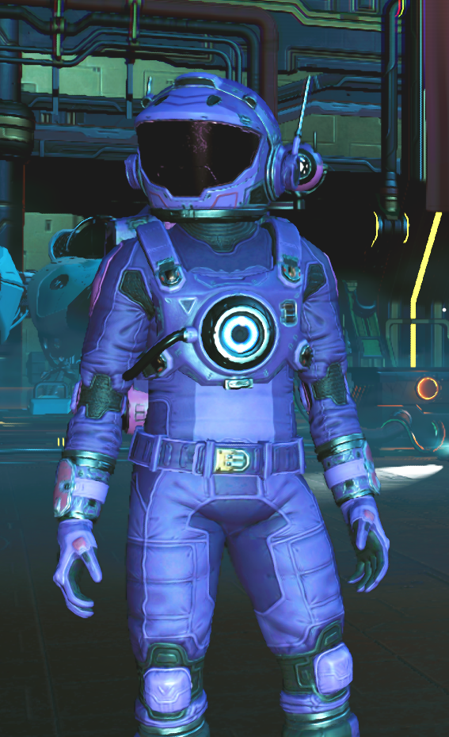

Greetings, champ! I am Art3mis, pronounced Are-tuh-miss (not Art-three-miss). I'm a fellow Traveller just like you most likely are. Explorer of worlds, discoverer of new species, creator of machines, destroyer of -kzzt- // 16 // 16 // 16 // 16 -kzzt-. I wear a dark purple and pink exosuit, and I always remain hooded. At least, all after the incident of -kzzt- on 4/6/24.
Oh man, what do I do in my free time? I do a lot, honestly. Sometimes I'm exploring strange new worlds in the Vonnegut II, and sometimes I'm in the -kzzt- giving out free stuff to other Travellers-in-need! It's the most beautiful thing, seeing other Travellers be able to continue their journeys because of something you did. Brings a tear to my eye. Anyways, I also love smuggling black market goods between systems, but it's been a hot minute since I've been able to do that, sadly. Damn sentinels and system authorities always on my tail.
Hmm... my backstory. I know what you're thinking, "Ooh, I'd like to know more about this Art3mis person." Well guess what, Ace? So would I. You see, I kinda just.. popped in one day. One day, suddenly conscious. No idea where I came from, what I was doing. Just one day became aware that I was sailing through space in my "First" ship. I say first because I have no recollection of ANYTHING from before that. It was small. Small and red. White wings, red body, and it was decent. No idea where or how I got it though. But I've since parted with it. Didn't bond with it much... at least not that I remember. Now I'm the owner of two of my own ships. A solar sailor I found and patched up with a bit of elbow grease, and a -kzzt-. // ERROR // ERROR // { DATA CORRUPTED } // ERROR // ERROR // -kzzt- but I don't like to talk about that much... but anyways that's how I came to own the Vonnegut II.
Oh come on.. you can't honestly be so lazy you didn't want to read all that??? Fine, here are the basics, you snot-nosed brat.
| Name | Art3mis |
|---|---|
| Race | Wish I knew, bucko. But, probably an Anomaly |
| Gender | Why do you need to know? Girl. Whatever |
| Exosuit Colour(s) | Primarily dark purple and pink |
| Primary Ship | Vonnegut II |
| Net Worth | Mind your own business, buddy |
| Hair Colour | Ginger. Yeah, I have no soul, so what? |
| Status | ERROR |